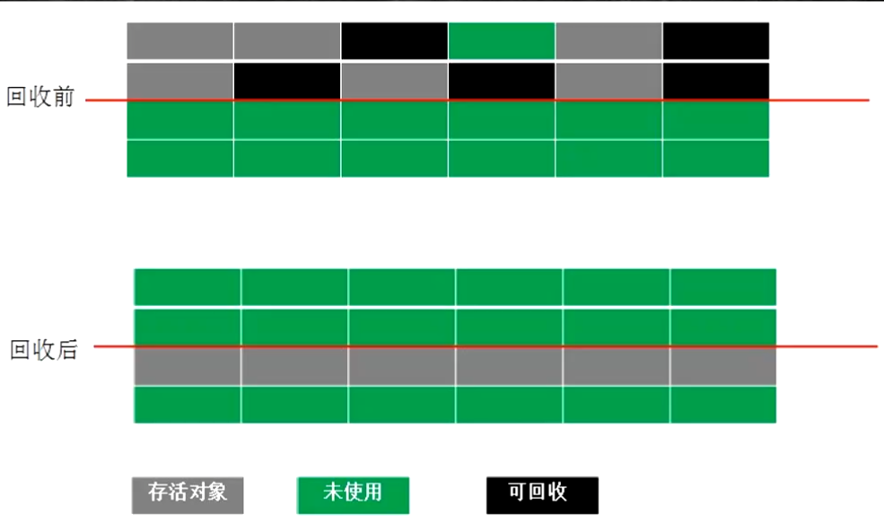

JVM
概念
jvm跟java无关
任何语言->class->JVM
jvm是一种规范
虚构出来的计算机
字节码指令集(汇编语言)
内存管理:栈 堆 方法区等
常见的JVM实现
Hotspot
Oracle官方,做实验用的jvm
Jrockit
BEA,最快jvm
被Oracle收购,合并于hotspot
TaoBaoVM
hotspot深度定制版
LiquidVM
直接针对硬件
azul zing
垃圾回收的业界标杆
J9 -IBM
Microsoft VM
JDK JRE JVM
JDK = jre + development kit
JRE = jvm + core lib
JVM
Class File Format
二进制字节流
数据类型 u1 u2 u4 u8 和_info
前八个16进制->magic version
然后八个16进制->minor version
然后四个16进制(2个字节)-> constant_pool_count
常量池
紧接constant_pool *
长度为constant_pool_count-1的表,从1开始,保留0
access_flags 定义类的那一排所代表的,例如public,final,implement,annotation
this_class
当前class文件
super_class
interfaces_count
interfaces
fields_count
fields
methods_count
methods
access_flags
name_index u2
descriptor_index u2
attributes_count
attributes
attributes_count -u2
attributes
code

Class Loading Linking Initializing
loading
加载过程
Loading
Linking
verification
preparation
静态变量设初值,不是赋值
resolution
initializing
class在内存中的位置
根据虚拟机来不同考虑
应该是metaspace
类加载器
JVM是按需动态加载,采用双亲委派机制 为了安全
java.lang.String被自定义loader,打包后发给客户,用户输密码,密码发回来
父加载器
父加载器不是"类加载器的加载器"类加载器都是bootstrap加载器加载的
双亲委派是一个孩子向父亲方向,然后父亲向孩子方向的双亲委派过程
层次
bootStrap
加载lib/rt.jar charset.jar核心类,c++实现
Extension
加载扩展jar包,jre/lib/ext/*.jar,或由-Djava.ext.dirs指定
App
加载classpath指定内容
CustomClassLoader
自定义ClassLoader
自底向上检查该类是否已经加载parent方向
如何打破双亲委派
如何打破:重写loadClass()
tomcat是重写loadClass为先自己加载,没有则找父加载器 ->热加载 每次都重新new
何时打破过
jdk1.2之前,自定义ClassLoader都必须重写loadClass
ThreadContextClassLoader可以实现基础类调用实现类代码,通过thread.setContextClassLoader指定
热启动,热部署
tomcat都有自己的模块指定classloader
class加载生成两部分
二进制存入内存(在meta space中,指的是method area,1.8之前叫PermanentGeneration)
生成一个class,指向二进制内存,来读取解析二进制,反射
ClassLoader源码
findClass 自己找
loadClass 方法过程
cache里面找
parent.loadClass 父类找,递归找
findClass 自己的findclass
如果是AppClassLoader首先会执行URLClassLoader的findClass方法
模板模式,留钩子函数,findClass
lazy loading
严格来说应该叫lazyInitializing
JVM规范并没有规定何时加载
但是严格规定了什么时候必须初始化
new getstatic putstatic invokestatic指令,访问final变量除外
java.lan.reflect对类进行反射调用时
初始化子类的时候,父类首先初始化
虚拟机启动时,被执行的主类必须初始化
动态语言支持java.lang.invoke.MethodHandle解析的结果为REF_getstatic REF_putstatic REF_invokestatic的方法句柄时 该类必须初始化
读取final 值不加载类
编译
混合模式 -Xmixed
解释器
JIT(Just in Time compiler)
混合使用解释器+热点代码编译
起始阶段采用解释执行
热点代码检测
多次调用的方法(方法计数器:检测方法执行频率)
多次调用的循环(循环计数器:检测循环执行频率)
进行编译
-Xmixed 默认混合模式开始解释执行,启动速度较快,对热点代码实行检测和编译
-Xint Xint 使用解释模式,启动很快执行稍慢
-Xcomp Xcomp使用纯编译模式,执行很快,启动很慢
exe,elf
Linking
Verification
验证文件是否符合jvm规定
Preparation
静态成员变量赋默认值
Resolution
将类,方法,属性等引用解析为直接引用 常量池中的各种符号引用解析为指针,偏移量等内存地址的直接引用
总结
load-默认值-初始值
new-申请内存-默认值-初始值
initializing
JMM java memory model
内存一致性
硬件层一致性
busLock 总线锁 ->老cpu
MESI 等各种各样的一致性协议(MSI,MESI,MOSI,Synapse,Firefly Dragon)
缓存锁
有些无法被缓存的数据或者跨越多个缓存行的数据依然必须使用总线锁
缓存行(cache line) 缓存的单位,一般为64字节 512位
伪共享
位于同一缓存行的两个不同数据,被两个cpu锁定,产生互相影响的伪共享问题 ->
JUC/falseSharing
缓存行对齐 -> 能够提高效率
甚至disruptor中就有相关操作
在cursor前后各填充了七个long来对其缓存行来提高效率
MESI ->缓存锁
Modified 修改加标记,m
Exclusive 独享标记,e
shared 同时在读 ,s
Invalid 被别人改过了 i
目前数据一致性是缓存锁+总线锁
指令排序

cpu类似内部多线程,查看没有依赖关系会乱序执行
乱序读合并写
JUC/029_WriteCombining->四个超快缓存 ,四个字节乱序执行JUC/jmm/Disorder
保证不乱序
cpu级别内存屏障
intel 硬件内存屏障,实实在在存在的
sfence : 在sfence指令前的写操作当必须在sfence指令后的写操作前完成
lfence : 在lfence指令前的读操作当必须在lfence指令后的读操作前完成
mfence : 在mfence指令前的读写操作必须在mfence指令后的读写操作前完成
原子指令:例如x86上的"lock",指令是一个Full Barrier,执行时会锁住内存子系统来确保执行顺序,甚至跨越 多个CPU,Software Locks通常使用了内存屏障或原子指令来实现变量可见性和保存程序顺序
JVM级别(JSR133),依赖于硬件内存屏障 规范
LoadLoad屏障
StoreStore屏障
LoadStore屏障
StoreLoad屏障
volatile
java->class
标记ACCESS_FLAG volatile
jvm
写操作
StoreStoreBarrier
volatile
StoreLoadBarrier
读操作
LoadLoadBarrier
volatile
LoadStoreBarrier
os
hsdis -hotspot dis assembler
Windows lock指令实现
synchronized
java->class
ACC_SYNCHRONIZED -代码块
monitor enter
代码块
monitor exit
monitor exit
可能出异常,所以一个enter对应两个exit
jvm
c和c++调用了系统提供的同步机制
os
lock cmpchg/xx
面试题
关于对象
解释一下对象的创建过程
class loading:类加载
class linking(verification preparation resolution)
verification:校验文件是否为class
preparation: 静态变量设默认值
resolution :解析
class initialization: 初始化,执行静态语句块
申请对象内存
成员变量赋默认值
调用构造方法
成员变量顺序赋初始值
执行构造方法语句
super
对象在内存中的存储布局
观察虚拟机配置
java -XX:+PrintCommandLineFlags -version
普通对象
对象头: markword 8
ClassPointer指针: -XX:+UseCompressedClassPointers为四个字节,不开启为8字节
实例数据
引用类型: -XX:+UseCompressOops为四字节,不开启为8字节 Oops Ordinary Object Pointers 成员变量的指针
padding对齐,8的倍数
数组对象
对象头:markword 8
ClassPointer 指针同上
数组长度:4字节
数组数据
对齐8的倍数
ObjectSizeAgent
HotSpot开启内存压缩的规则(64位)
4g以下直接砍掉高32位
4g-32g,默认开启内存压缩ClassPointer Oops
32G,压缩无效,使用64位,内存不是越大越好
对象头具体包括什么
偏向锁
锁
HashCode
31位hashcode->System.identityHashCode(...) -->64位机子,32位的25位
按原始内容机选hashcode,重写过的hashcode方法计算的结果不会存在这里
分代年龄->4bit,最大15
对象怎么定位
句柄池 -> gc算法方便(三色算法)
两个指针
数据类型指针 T.class
实例数据指针
直接指针 ->hotspot
一个指针
指向实例数据
实例数据指向数据类型
对象怎么分配
GC相关内容
Object o = new Object 在内存中占用多少字节

JVM Runtime Data Area && JVM Instructions
JVM Runtime Data Area
PC program count 线程私有
存放指令位置
虚拟机的运行,类似于这样的循环
while(not end) { 取PC中的位置,找到对应位置指令 执行指令 PC++ }
Heap
Stack
JVM stack *** 线程私有
Frame - 每个方法对应一个栈帧
Local Variables 局部变量表
Operand Stack 操作数栈
对于long的处理(store and load),多数虚拟机的实现都是原子的jls17.7,没必要volatile
dynamic linking 动态链接
jvms 2.6.3
a()调用了b(),去constant_pool找b()的链接->动态链接
return address
a()调用b(),返回值放的位置以及继续的地址
native method stack 线程私有
method area *** 逻辑概念
具体实现
perm Space (<1.8)
字符串常量位于PermSpace
FGC不会清理
for(;;) I i =C::n //Method Area ->OOM,1.8之后不会OOM大小启动时指定,不能变
meta space(>=1.8)
字符串常量位于堆
会触发FGC清理
不设定的话最大就是物理内存
Direct Memory
JVM直接访问内存空间的内存,不用再复制到jvm
nio,提高效率,实现zero copy
JVM Instructions
store
load
pop
add
mul ...
invoke
invokeStatic
调用静态方法
invokeVirtual
自带多态
final方法
invokeInterface
invokeSpecial
可以直接定位的
private 方法,init
invokeDynamic
JVM最难指令
lambda表达式
反射
其他动态语言,scala,kotlin,CGLib ASM动态产生的class会用到的指令
Garbage Collector && GC tuning
垃圾 -> 孤儿
how to find a garbage
reference count 引用计数 python
循环引用不能解决
root Searching 根可达算法 java
根对象
线程栈变量
静态变量
常量池
JNI指针 ->native
GC Algorithms
Mark-Sweep(标记清除)

算法相对简单
存活对象比较多的情况下效率较高
两遍扫描,效率偏低
容易产生碎片
Copying(拷贝)
 适用于存活对象较少的情况,只扫描一次,效率高,没有碎片
空间浪费
移动复制对象,需要调整对象引用
Mark-Compact(标记压缩)
不会产生碎片,方便对象分配
不会产生内存减半
扫描两次
需要移动对象,效率偏低
堆内存逻辑分区(不适用部分带垃圾收集器)
部分垃圾回收器使用的模型
除了Epsilon ZGC Shenandoah之外的GC都是使用逻辑分代模型
G1是逻辑分代,物理不分代
除此之外,不仅逻辑分代,而且物理分代

内存分配
方法区,永久区,元空间... 30:00
栈上分配
线程私有对象
无逃逸
支持标量替换
无需调整
线程本地分配TLAB(Thread Local Allocation Buffer)
占用eden,默认1%
多线程的时候不用竞争eden就可以申请空间,提高效率
小对象
无需调整
老年代
大对象
eden
对象何时进入老年代
超过
XX:MaxTenuringThreshold指定次数(YGC)Parallel Scavenge 15
CMS 6
G1 15 git config --global http.proxy 'socks5://127.0.0.1:1080' git config --global https.proxy 'socks5://127.0.0.1:1080'
动态年龄
s1 ->s2超过50%
把年龄最大的放入O

分配担保
YGC期间 survivor区空间不够了 空间担保直接进入老年代
垃圾回收器
Serial
stw
mark-sweep-compact ?
safe point 完成必要的事情
老gc,处理空间小,大了则stw时间特别长
SerialOld 老年代
stw
mark-sweep-compact 标记压缩
single GC thread
Parallel Scavenge
stw
copying
multiple GC
Parallel old
stw
compacting
multiple GC
Parallel new
stw
copying
multiple gc
加强版PS,配合CMS用的变种
PN:响应时间优先
PS:吞吐量优先
G1(10ms)
算法:三色标记+SATB
ZGC(1ms) PK C++
算法:ColoredPointers+写屏障
Shenandoah
算法:ColoredPointer+读屏障
Epsilon
默认回收器,PS+Parallel Old
CMS
concurrent mark sweep
老年代垃圾回收器
phases
initial mark
concurrent mark
remark
concurrent sweep

问题
MemoryFragmentation 内存碎片化
搬出Serial Old来慢慢压缩空间
-XX:CMSFUllGCsBeforeCompaction
Floating Garbage
PromotionFailed
Concurrent Mode Failure -XX:CMSInitiatingOccupancyFraction 92%
降低这个值,让cms保持老年代足够空间
SeriaOld
垃圾收集器跟内存大小的关系
Serial 几十m
PS 上百m到几个g
CMS 几个g到十几个g
g1 上百g
ZGC 4T
三色扫描算法
GC 调优
吞吐量: 用户代码时间/(用户代码执行时间+垃圾回收时间) 干正事的比例
响应时间 : STW越短,响应时间越好
所谓调优: 首先确定追求什么,吞吐量优先还是响应时间优先还是在满足一定响应时间的情况下,要求达到多少吞吐量
命令
Log
java -X ms5M -Xmx5M -XX:+PrintCommandLineFlags -XX:+PrintGCDetails com.mashibing.jvm.c5_gc.T01_HelloGC
total= eden+1个survivor